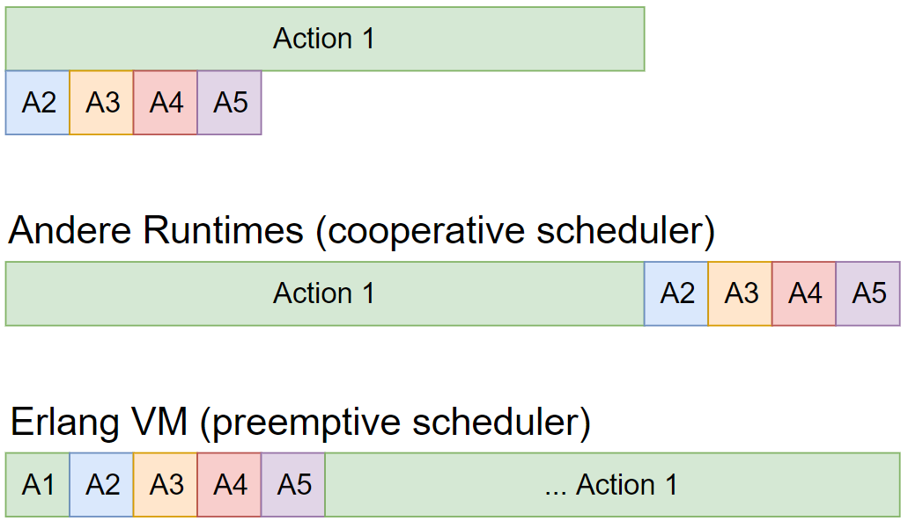

<h2>Cooperative vs. preemptive Scheduler</h2>



<aside class="notes">
    <ul>
        <li>selbst Go kann da nicht mithalten</li>
		<li>Beispiel: Webserver, der eine Simulation ausführt mit User Daten</li>
		<li>Ergebnis: Cooperative -> keiner bekommt eine Antwort, bis A1 fertig ist</li>
		<li>Mit Erlang: A2 bis A5 bekommen nach wenigen ms eine Antwort, nur A1 muss lange warten</li>
		<li></li>
    </ul>
</aside>